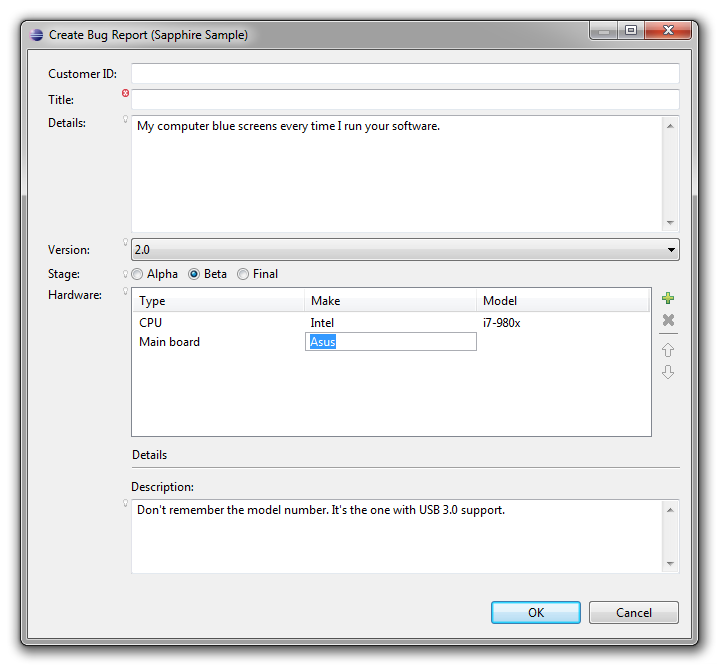
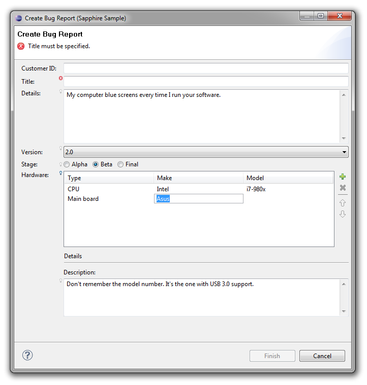
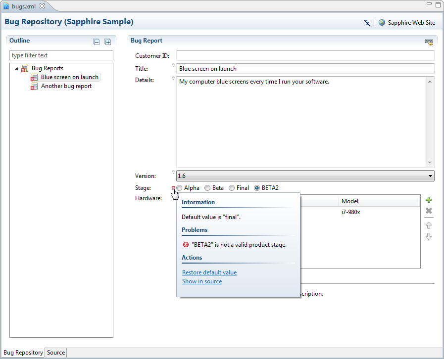

Little has changed in the way Java desktop UI is written since the original Java release. Technologies have changed (AWT, Swing, SWT, etc.), but fundamentals remain the same. The developer must choose which widgets to use, how to lay those widgets out, how to store the data being edited and how to synchronize the model with the UI. Even the best developers fall into traps of having UI components talk directly to other UI components rather than through the model. Inordinate amount of time is spent debugging layout and data-binding issues.
Sapphire aims to raise UI writing to a higher level of abstraction. The core premise is that the basic building block of UI should not be a widget (text box, label, button, etc.), but rather a property editor. Unlike a widget, a property editor analyzes metadata associated with a given property, renders the appropriate widgets to edit that property and wires up data binding. Data is synchronized, validation is passed from the model to the UI, content assistance is made available, etc.
This fundamentally changes the way developers interact with a UI framework. Instead of writing UI by telling the system how to do something, the developer tells the system what they intend to accomplish. When using Sapphire, the developer says "I want to edit LastName property of the person object". When using widget toolkits like SWT, the developer says "create label, create text box, lay them out like so, configure their settings, setup data binding and so on". By the time the developer is done, it is hard to see the original goal in the code that's produced. This results in UI that is inconsistent, brittle and difficult to maintain.
Sapphire includes a modeling framework that is tuned to the needs of the Sapphire UI framework and is designed to be easy to learn. It is also optimized for iterative development. A Sapphire model is defined by writing Java interfaces and using annotations to attach metadata. An annotation processor that is part of Sapphire SDK then generates the implementation classes. Sapphire leverages Eclipse Java compiler to provide quick and transparent code generation that runs in the background while you work on the model. The generated classes are treated as build artifacts and are not source controlled. In fact, you will rarely have any reason to look at them. All model authoring and consumption happens through the interfaces.
In this article we will walk through a Sapphire sample called EzBug. The sample is based around a scenario of building a bug reporting system. Let's start by looking at BugReport.
@GenerateImpl
public interface BugReport extends IModelElement
{
ModelElementType TYPE = new ModelElementType( BugReport.class );
// *** CustomerId ***
@XmlBinding( path = "customer" )
@Label( standard = "customer ID" )
ValueProperty PROP_CUSTOMER_ID = new ValueProperty( TYPE, "CustomerId" );
Value<String> getCustomerId();
void setCustomerId( String value );
// *** Title ***
@XmlBinding( path = "title" )
@Label( standard = "title" )
@Required
ValueProperty PROP_TITLE = new ValueProperty( TYPE, "Title" );
Value<String> getTitle();
void setTitle( String value );
// *** Details ***
@XmlBinding( path = "details" )
@Label( standard = "details" )
@LongString
@Required
ValueProperty PROP_DETAILS = new ValueProperty( TYPE, "Details" );
Value<String> getDetails();
void setDetails( String value );
// *** ProductVersion ***
@Type( base = ProductVersion.class )
@XmlBinding( path = "version" )
@Label( standard = "version" )
@DefaultValue( text = "2.5" )
ValueProperty PROP_PRODUCT_VERSION = new ValueProperty( TYPE, "ProductVersion" );
Value<ProductVersion> getProductVersion();
void setProductVersion( String value );
void setProductVersion( ProductVersion value );
// *** ProductStage ***
@Type( base = ProductStage.class )
@XmlBinding( path = "stage" )
@Label( standard = "stage" )
@DefaultValue( text = "final" )
ValueProperty PROP_PRODUCT_STAGE = new ValueProperty( TYPE, "ProductStage" );
Value<ProductStage> getProductStage();
void setProductStage( String value );
void setProductStage( ProductStage value );
// *** Hardware ***
@Type( base = HardwareItem.class )
@XmlListBinding( mappings = { @XmlListBinding.Mapping( element = "hardware-item", type = HardwareItem.class ) } )
@Label( standard = "hardware" )
ListProperty PROP_HARDWARE = new ListProperty( TYPE, "Hardware" );
ModelElementList<HardwareItem> getHardware();
}As you can see in the above code listing, a model element definition in Sapphire is composed of a series of blocks. These blocks define properties of the model element. Each property block has a PROP_* field that declares the property, the metadata in the form of annotations and the accessor methods. All metadata about the model element is stored in the interface. There are no external files. When this interface is compiled, Java persists these annotation in the .class file and Sapphire is able to read them at runtime.
Sapphire has four types of properties: value, element, list and transient. Value properties hold simple data, such as strings, integers, enums, etc. Any object that is immutable and can be serialized to a string can be stored in a value property. An element property holds a reference to another model element. You can specify whether this nested model element should always exist (implied element property) or if it should be possible to create and delete it. A list property holds zero or more model elements. A list can be homogeneous (only holds one type of elements) or heterogeneous (holds elements of various specified types). A transient property holds an arbitrary object reference that does not need to be persisted to permanent storage.
Using a combination of list and element properties, it is possible to create an arbitrary model hierarchy. In the above listing, there is one list property. It is homogeneous and references HardwareItem element type. Let's look at that type next.
@GenerateImpl
public interface HardwareItem extends IModelElement
{
ModelElementType TYPE = new ModelElementType( HardwareItem.class );
// *** Type ***
@Type( base = HardwareType.class )
@XmlBinding( path = "type" )
@Label( standard = "type" )
@Required
ValueProperty PROP_TYPE = new ValueProperty( TYPE, "Type" );
Value<HardwareType> getType();
void setType( String value );
void setType( HardwareType value );
// *** Make ***
@XmlBinding( path = "make" )
@Label( standard = "make" )
@Required
ValueProperty PROP_MAKE = new ValueProperty( TYPE, "Make" );
Value<String> getMake();
void setMake( String value );
// *** ItemModel ***
@XmlBinding( path = "model" )
@Label( standard = "model" )
ValueProperty PROP_ITEM_MODEL = new ValueProperty( TYPE, "ItemModel" );
Value<String> getItemModel();
void setItemModel( String value );
// *** Description ***
@XmlBinding( path = "description" )
@Label( standard = "description" )
@LongString
ValueProperty PROP_DESCRIPTION = new ValueProperty( TYPE, "Description" );
Value<String> getDescription();
void setDescription( String value );
}The HardwareItem listing should look very similar to BugReport and that's the point. A Sapphire model is just a collection of Java interfaces that are annotated in a certain way and reference each other.
A bug report is contained in FileBugReportOp, which serves as the top level type in the model.
@GenerateImpl
@XmlBinding( path = "report" )
public interface FileBugReportOp extends IModelElement
{
ModelElementType TYPE = new ModelElementType( FileBugReportOp.class );
// *** BugReport ***
@Type( base = BugReport.class )
@Label( standard = "bug report" )
@XmlBinding( path = "bug" )
ImpliedElementProperty PROP_BUG_REPORT = new ImpliedElementProperty( TYPE, "BugReport" );
BugReport getBugReport();
}Let's now look at the last bit of code that goes with this model, which is the enums.
@Label( standard = "type", full = "hardware type" )
public enum HardwareType
{
@Label( standard = "CPU" )
CPU,
@Label( standard = "main board" )
@EnumSerialization( primary = "Main Board" )
MAIN_BOARD,
@Label( standard = "RAM" )
RAM,
@Label( standard = "video controller" )
@EnumSerialization( primary = "Video Controller" )
VIDEO_CONTROLLER,
@Label( standard = "storage" )
@EnumSerialization( primary = "Storage" )
STORAGE,
@Label( standard = "other" )
@EnumSerialization( primary = "Other" )
OTHER
}
@Label( standard = "product stage" )
public enum ProductStage
{
@Label( standard = "alpha" )
ALPHA,
@Label( standard = "beta" )
BETA,
@Label( standard = "final" )
FINAL
}
@Label( standard = "product version" )
public enum ProductVersion
{
@Label( standard = "1.0" )
@EnumSerialization( primary = "1.0" )
V_1_0,
@Label( standard = "1.5" )
@EnumSerialization( primary = "1.5" )
V_1_5,
@Label( standard = "1.6" )
@EnumSerialization( primary = "1.6" )
V_1_6,
@Label( standard = "2.0" )
@EnumSerialization( primary = "2.0" )
V_2_0,
@Label( standard = "2.3" )
@EnumSerialization( primary = "2.3" )
V_2_3,
@Label( standard = "2.4" )
@EnumSerialization( primary = "2.4" )
V_2_4,
@Label( standard = "2.5" )
@EnumSerialization( primary = "2.5" )
V_2_5
}You can use any enum as a type for a Sapphire value property. Here, once again, you see Sapphire pattern of using Java annotations to attach metadata to model particles. In this case the annotations are specifying how Sapphire should present enum items to the user and how these items should be serialized to string form.
The bulk of the work in writing UI using Sapphire is modeling the data that you want to present to the user. Once the model is done, defining the UI is simply a matter of arranging the properties on the screen. This is done via an XML file.
<definition>
<import>
<package>org.eclipse.sapphire.samples.ezbug</package>
</import>
<composite>
<id>bug.report</id>
<documentation>
<title>EzBug</title>
<content>This would be the help content for the EzBug system.</content>
</documentation>
<content>
<property-editor>CustomerId</property-editor>
<property-editor>Title</property-editor>
<property-editor>
<property>Details</property>
<scale-vertically>true</scale-vertically>
</property-editor>
<property-editor>ProductVersion</property-editor>
<property-editor>ProductStage</property-editor>
<property-editor>
<property>Hardware</property>
<child-property>
<property>Type</property>
</child-property>
<child-property>
<property>Make</property>
</child-property>
<child-property>
<property>ItemModel</property>
</child-property>
</property-editor>
<composite>
<indent>true</indent>
<content>
<separator>
<label>details</label>
</separator>
<switching-panel>
<list-selection-controller>
<property>Hardware</property>
</list-selection-controller>
<panel>
<key>HardwareItem</key>
<content>
<property-editor>
<property>Description</property>
<span>true</span>
<height>75</height>
</property-editor>
</content>
</panel>
<default-panel>
<content>
<label>Select a hardware item above to view or edit additional parameters.</label>
</content>
</default-panel>
</switching-panel>
</content>
</composite>
</content>
<scale-vertically>true</scale-vertically>
<width>600</width>
<height>500</height>
</composite>
<dialog>
<id>bug.report.dialog</id>
<label>create bug report (sapphire sample)</label>
<initial-focus>Title</initial-focus>
<content>
<include>bug.report</include>
</content>
<scale-vertically>true</scale-vertically>
</dialog>
</definition>A Sapphire UI definition is a hierarchy of parts. At the lowest level we have the property editor and a few other basic parts like separators. These are aggregated together into various kinds of composities until the entire part hierarchy is defined. Some hinting here and there to guide the UI renderer and the UI definition is complete. Note the top-level composite and dialog elements. These are parts that you can re-use to build more complex UI definitions or reference externally from Java code.
Next we will write a little bit of Java code to open the dialog that we defined.
FileBugReportOp operation = FileBugReportOp.TYPE.instantiate();
try
{
SapphireDialog dialog = new SapphireDialog
(
shell, operation.getBugReport(),
DefinitionLoader.context( FileBugReportOp.class ).sdef( "EzBug.sdef" ).dialog( "bug.report.dialog" )
);
if( dialog.open() == Dialog.OK )
{
// Do something. User input is found in the bug report model.
}
}
finally
{
operation.dispose();
}Pretty simple, right? We create the model and then use the provided SapphireDialog class to instantiate the UI by referencing the model instance and the UI definition. The pseudo-URI that's used to reference the UI definition is simply bundle id, followed by the path within that bundle to the file holding the UI definition, followed by the id of the definition to use.
Let's run it and see what we get...
There you have it. Professional rich UI backed by your model with none of the fuss of configuring widgets, trying to get layouts to do what you need them to do or debugging data binding issues.
A dialog is nice, but really a wizard would be better suited for filing a bug report. Can Sapphire do that? Sure. Let's first go back to the model. A wizard is a UI pattern for configuring and then executing an operation. Our model is not really an operation yet. We can create and populate a bug report, but then we don't know what to do with it.
Any Sapphire model element can be turned into an operation by adding an execute method. We will do that now with FileBugReportOp. In particular, FileBugReportOp will be changed to extend IExecutableModelElement and will acquire the following method definition:
// *** Method: execute ***
@DelegateImplementation( FileBugReportOpMethods.class )
Status execute( ProgressMonitor monitor );Note how the execute method is specified. We don't want to modify the generated code to implement it, so we use delegation instead. The @DelegateImplementation annotation can be used to delegate any method on a model element to an implementation located in another class. The Sapphire annotation processor will do the necessary hookup.
public class FileBugReportOpMethods
{
public static final Status execute( FileBugReportOp context, ProgressMonitor monitor )
{
// Do something here.
return Status.createOkStatus();
}
}The delegate method implementation must match the method being delegated with two changes: (a) it must be static, and (b) it must take the model element as the first parameter.
Now that we have completed the bug reporting operation, we can return to the UI definition file and add the following:
<wizard>
<id>wizard</id>
<element-type>FileBugReportOp</element-type>
<label>create bug report (sapphire sample)</label>
<page>
<id>main.page</id>
<label>create bug report</label>
<description>Create and submit a bug report.</description>
<initial-focus>Title</initial-focus>
<content>
<with>
<path>BugReport</path>
<default-panel>
<content>
<include>bug.report</include>
</content>
</default-panel>
</with>
</content>
<scale-vertically>true</scale-vertically>
</page>
</wizard>The above defines a one page wizard by re-using the composite definition created earlier. Now back to Java to use the wizard...
SapphireWizard<FileBugReportOp> wizard = new SapphireWizard<FileBugReportOp>
(
FileBugReportOp.TYPE,
DefinitionLoader.context( FileBugReportOp.class ).sdef( "EzBug.sdef" ).wizard( "wizard" )
);
WizardDialog dialog = new WizardDialog( shell, wizard );
dialog.open();SapphireWizard will invoke the operation's execute method when the wizard is finished. That means we don't have to act based on the result of the open call. The execute method will have completed by the time the open method returns to the caller.
The above code pattern works well if you are launching the wizard from a custom action, but if you need to contribute a wizard to an extension point, you can extend SapphireWizard to give your wizard a zero-argument constructor that creates the operation and references the correct UI definition.
Let's run it...
Now that we have a system for submitting bug reports, it would be nice to have a way to maintain a collection of these reports. Even better if we can re-use some of our existing code to do this. Back to the model.
The first step is to create BugRepository type which will hold a collection of bug reports. By now you should have a pretty good idea of what that will look like.
@GenerateImpl
@XmlBinding( path = "bugs" )
public interface BugRepository extends IModelElement
{
ModelElementType TYPE = new ModelElementType( BugRepository.class );
// *** BugReports ***
@Type( base = BugReport.class )
@Label( standard = "bug report" )
@XmlListBinding( mappings = { @XmlListBinding.Mapping( element = "bug", type = BugReport.class ) } )
ListProperty PROP_BUG_REPORTS = new ListProperty( TYPE, "BugReports" );
ModelElementList<BugReport> getBugReports();
}That was easy. Now let's go back to the UI definition file.
Sapphire simplifies creation of multi-page editors. It also has very good integration with WTP XML editor that makes it easy to create the very typical two-page editor with a form-based page and a linked source page showing the underlying XML. The linkage is fully bi-directional.
To create an editor, we start by defining the structure of the pages that will be rendered by Sapphire. Sapphire currently only supports one editor page layout, but it is a very flexible layout that works for a lot scenarios. You get a tree outline of content on the left and a series of sections on the right that change depending on the selection in the outline.
<editor-page>
<id>editor.page</id>
<element-type>BugRepository</element-type>
<page-name>bug repository</page-name>
<page-header-text>bug repository (sapphire sample)</page-header-text>
<initial-selection>bug reports</initial-selection>
<root-node>
<node>
<label>bug reports</label>
<section>
<content>
<label>Use this editor to manage your bug repository.</label>
<spacer/>
<action-link>
<action-id>Sapphire.Add</action-id>
<label>add a bug report</label>
</action-link>
</content>
</section>
<node-factory>
<property>BugReports</property>
<case>
<label>${ Title == null ? "<bug>" : Title }</label>
<section>
<label>bug report</label>
<content>
<include>bug.report</include>
</content>
</section>
</case>
</node-factory>
</node>
</root-node>
</editor-page>You can see that the definition centers around the outline. The definition traverses the model as the outline is defined with sections attached to various nodes acquiring the context model element from their node. The outline can nest arbitrarily deep and you can even define recursive structures by factoring out node definitions, assigning ids to them and then referencing those definitions similarly to how this sample references an existing composite definition.
The next step is to add an editor declaration to the plugin.xml file. Note that the declaration references an editor class provided by Sapphire and specifies sdef via a parameter. For simplicity of the example, the editor is registered as the default choice for files named "bugs.xml".
<extension point="org.eclipse.ui.editors">
<editor
id="org.eclipse.sapphire.samples.ezbug.BugRepositoryEditor"
name="Bug Repository Editor (Sapphire Sample)"
filenames="bugs.xml"
default="true">
<class class="org.eclipse.sapphire.ui.swt.xml.editor.SapphireEditorForXml">
<parameter name="sdef" value="org.eclipse.sapphire.samples.ezbug.EzBug"/>
</class>
</editor>
</extension>That's it. We have created a two page editor with a Sapphire form page and an XML source page.

Sapphire really shines in complex cases like this where form UI is sitting on top a source file that users might edit by hand. In the above screen capture, what happened is that the user manually entered "BETA2" for the product stage in the source view. There is a problem marker next to the property editor and the blue assistance popup is accessible by clicking on that marker. The problem message is displayed along with additional information about the property and available actions. The "Show in source" action, for instance, will immediately jump to the editor's source page and highlight the text region associated with this property. This is very valuable when you must deal with large files. These facilities and many others are available out of the box with Sapphire with no extra effort from the developer.
Now that you've been introduced to what Sapphire can do, compare it to how you are currently writing UI code. All of the code presented in this article can be written by a developer with just a few weeks of Sapphire experience in an hour or two. How long would it take you to create something comparable using your current method of choice?